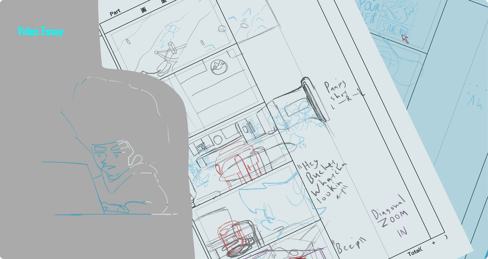

Home
About
Projects
Emmet Beebe Foley Jr

Video Essay Project
This page is about an animated Video Essay series that I have been workshopping on and off for some time now as a personal project. this project makes use of my mascot character
Sanc